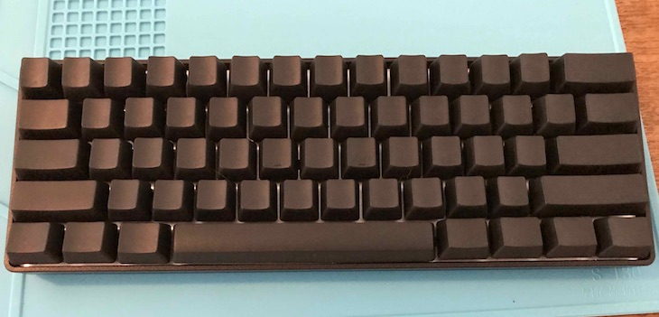
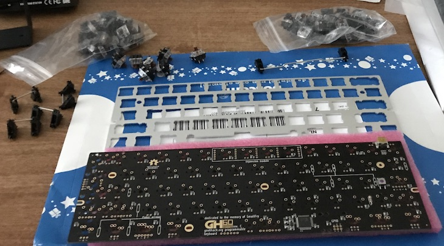
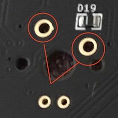
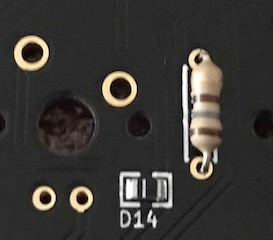
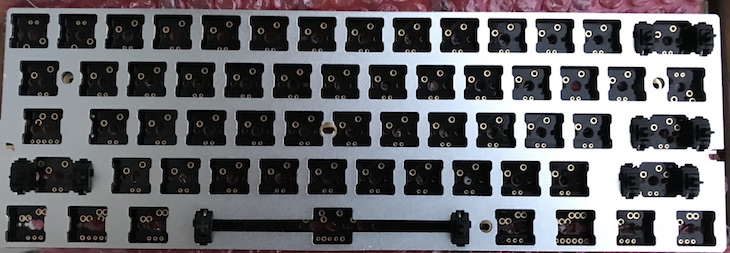
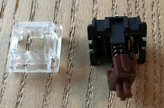
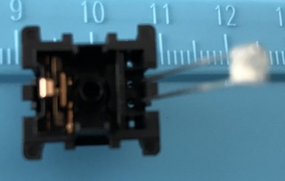
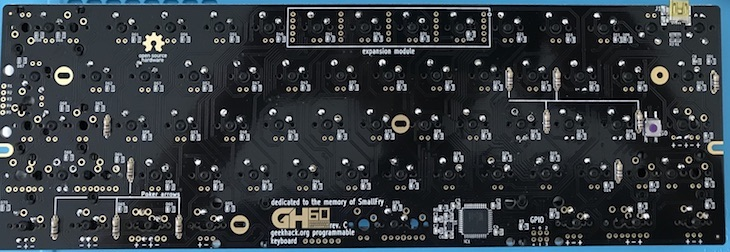

Fri 06 July 2018
Some notes on assembling a DIY programmable mechanical keyboard based on the GH60 Rev. c pcb.
I wanted a mechanical keyboard for a while, and towards the end of 2017 I made the mistake of looking for advice on r/MechanicalKeyboards. My initial idea was to buy a stock 104 key DAS Keyboard. I ended up soldering together a custom 60% programmable keyboard.
As the name suggests, this type of keyboard is 60% the size of a regular 104 keys one. Noticeably the numpad, arrow keys, and F1 through F12 keys are missing. Their functionality is provided by remapping keys on layers, accessible via function keys. For example on my keyboard arrow keys functionality is accessible on "layer 1", by pressing fn + wasd.
The assembled board looks like this 
Building it is relatively simple, and there are a few tutorials online. However, most of them refer to a clone of GH60 (the Satan board). There were a couple of things I had to figure out on the fly, that were not mentioned elsewhere. Hence these notes.
I bought the PCB, switches and stabilizer from Techkeys. The rest comes from Aliexpress and local shops.

There's a number of opensource firmware available for keyboards based on the Atmel AVR microcontroller. Popular choices are tmk, qmk and EasyAvr. Currently I'm using tmk.
A binary image of the firmware can be flashed using the dfu-programmer utility (https://dfu-programmer.github.io). It's available via homebrew on MacOS and via the repos of all major linux distributions. Each firmware will provide instructions for flashing.
Before starting with soldering, make sure that the board is functional. The gh60 pcb from Techkeys comes with no firmware installed. The first thing to do is to flash it, connect it 62 to a computer and verify that all keys register. Use a pair of tweezers (or anything conductive) to touch the two pins of each key together.

I used the tester at http://www.keyboardtester.com to make sure everything worked fine.
Resistors need to be soldered before mounting the keyboard plate.
The pins are well marked on the pcb and it's hard to go wrong. Here's a nice intro on soldering resistors thttps://www.youtube.com/watch?v=3RV3AI-3zeA&t=337s if you have never done that before.
.
Just click the stabilizers in the pcb slots, they clip in one direction only. The SPACEBAR should be mounted with the stabilizer bar facing upwards, other stabilizers will have their bar pointing downwards. Once done, clip the mount plate over them.

Make sure to clip stabilizers in before doing any soldering.
The board supports LEDs on ESC, CAPS LOCK, the WASD cluster and POKER cluster (the right shift
and three keys under it). Mounting LEDs is a bit of a chore. We need to disassemble each switch, stick an LED inside, put it all back together and solder the key and LED pins to the board.
 
Polarity of the LED pins is marked, but it's always a good idea to test things before soldering. There is not much space inside the switch, but I found that 1.8mm fit just right.
Now it's just a matter of inserting the switches in their slots (be careful with their polarity!), paying attention not to bend pins, and patiently solder them.

The switches I bought came with PCB mount pegs, which I cut off to mount them on the plate.
Place the assembled board in the case and fix 6 screws. That's it.
All in all, this was a fun DIY project. I'm happy with the keyboard. The compact layout goes well with the VIM keybindings I use in my editors and shell, and the brown switches are an absolute joy to type on. I have not done any heavy layer customisation yet, but I've seen a few interesting layouts online which I'm looking forward to replicating.